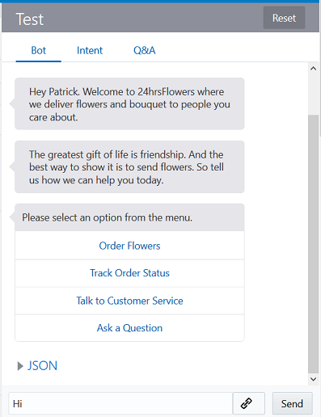

Oracle Intelligent Bots Advanced Training - Lab 3a (Dialog Flow - Exploring the Flower Order Flow)
Oracle Intelligent Bots Advanced Training - Lab 3a (Dialog Flow - Exploring the Flower Order Flow)This is the first part of a two-part lab on the dialog flow feature, where you can choreograph the interaction between the bot and its users.
In this part, you will simply explore how the bot, as currently designed, responds to your input and which directions it takes you. You should see a variety of different messages and menus, depending on your input.
 Clone the advt24hrsflowers_bot3 Bot
Clone the advt24hrsflowers_bot3 Bot
- Open the main menu by clicking
 and select Development > Bots.
and select Development > Bots. - Within the tile for the
advt24hrsflowers_bot3bot, click , select Clone, and name the clone
, select Clone, and name the clone advt24hrsflowers_bot3<YourInitials>. For example:advt24hrsflowers_bot3JS. - Locate the tile for your clone of the bot (using the Search field might help) and click it to open the bot.
 Train and Test the Bot Order Flow
Train and Test the Bot Order Flow
- Train your bot by
- Clicking

- Selecting Trainer Ht.
- Making sure Q&A Training is included.
- Clicking Submit.
- Clicking
- Test the bot by clicking
 , selecting Bot, typing
, selecting Bot, typing Hiin the Message field and pressing Enter.You should see a response that looks something like this:
 - From the menu that appears, select Order Flowers.
- From the next menu that appears, select either Bouquet or Flowers.
- Continue playing with the bot as you'd like for the next 10 minutes and take notes on what you do and what kind of responses you get.
Observations that you make about how the bot responds (e.g. to certain words and phrases) will help you later fine-tune its behavior.